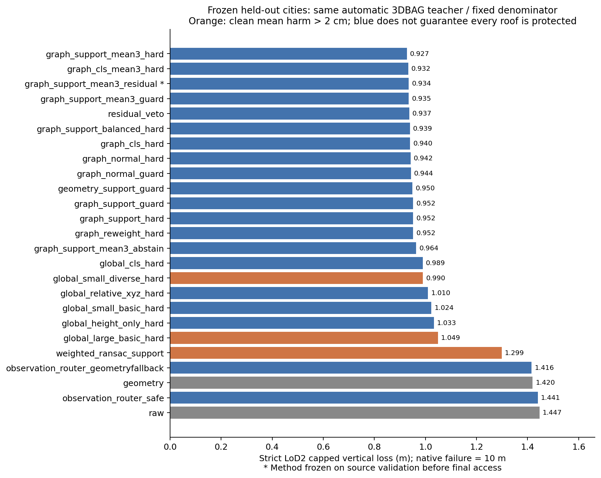
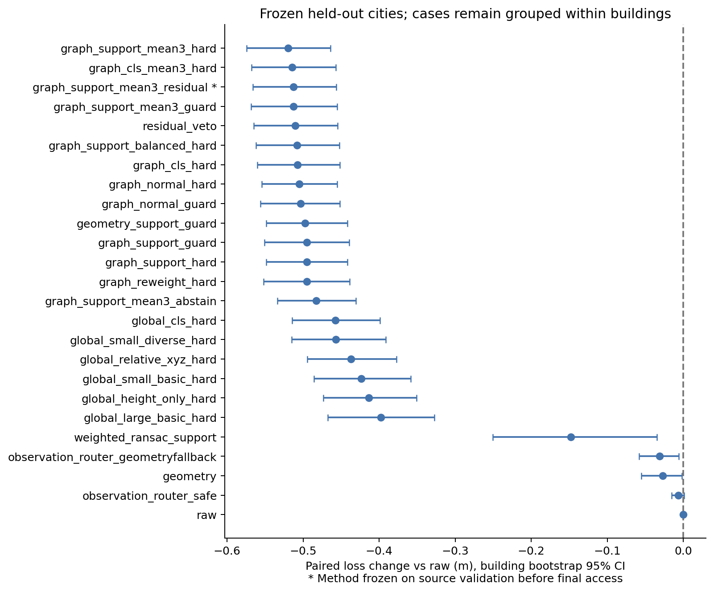
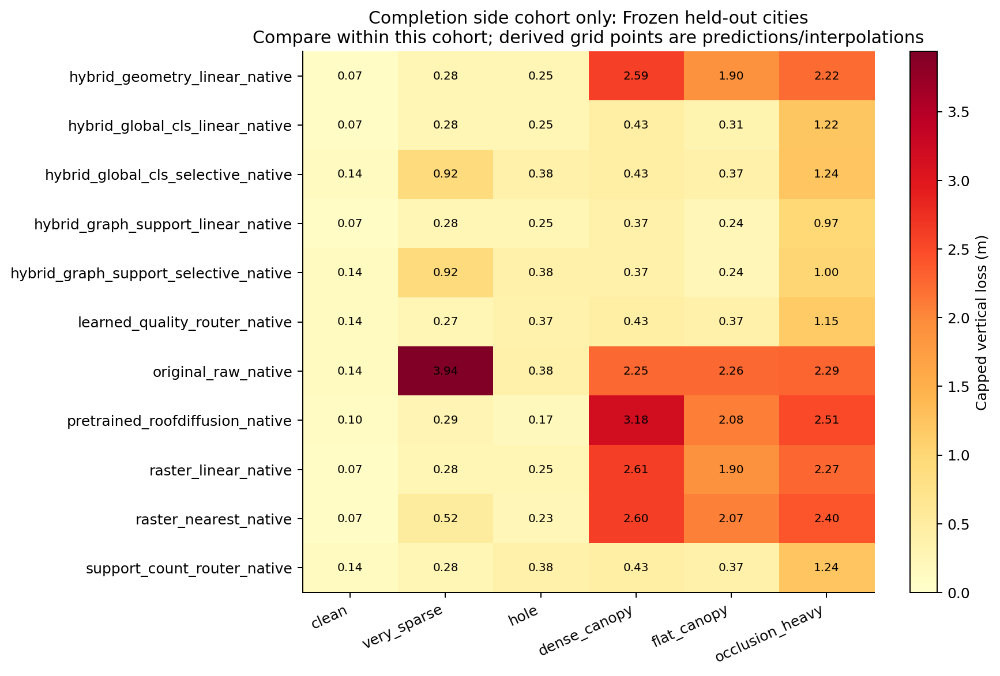
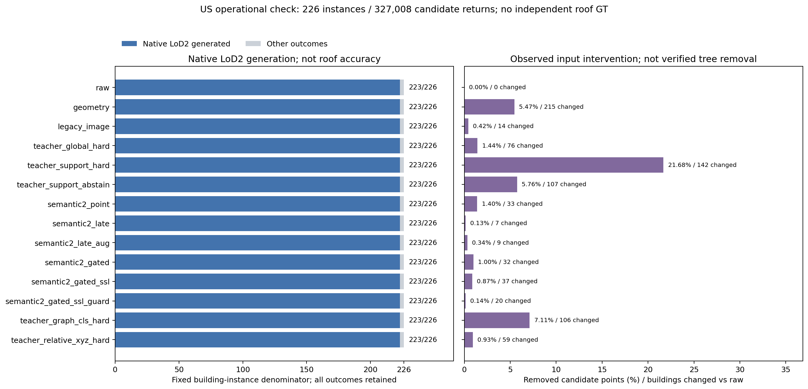
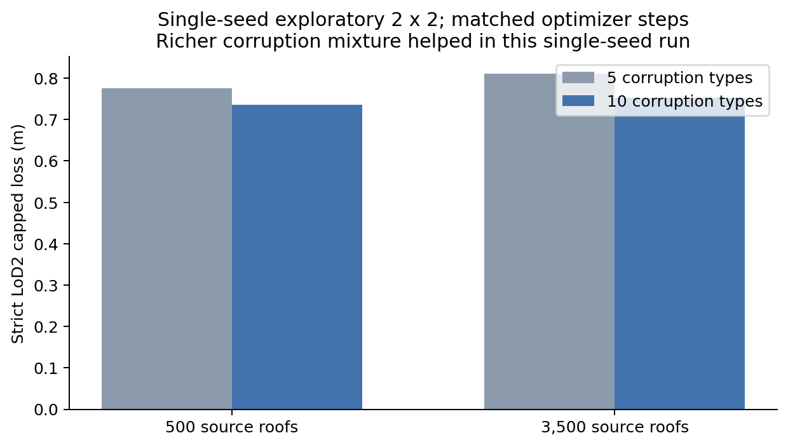
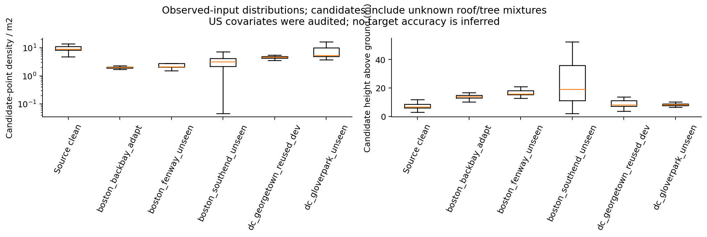
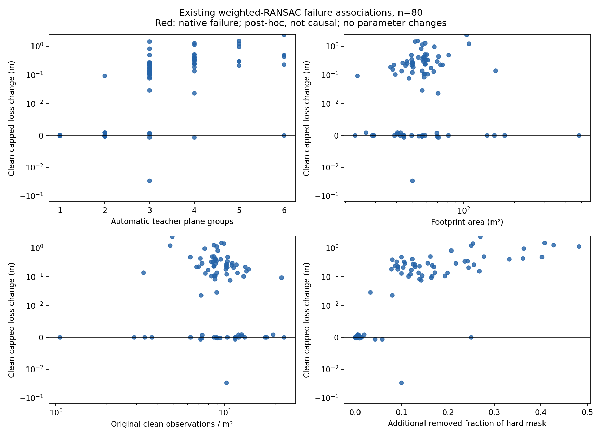

已完成独立终审 · 持续 4.10 小时 · 41 个训练实例（含重复） · 25 个主流程 · 11 个补面流程 · 14 个真实数据流程
源验证提前选定：graph_support_mean3_residual。留出城市的限幅垂直损失为 0.9345 米，原始基线为 1.4471 米；全部失败保留在分母。
这些数值来自自动 3DBAG 教师及人工生成的观测污染，评价教师几何恢复。美国 226 个建筑实例用于真实数据运行检验，目前没有独立屋面真值。模型生成成功不能代替屋顶准确率。
主方法 745/768 原生成功，失败槽与原始基线相同；成功输出中 3 个未通过 1 毫米边关联诊断。尚无完整几何有效性或全部水密认证。
同一 64 栋建筑 × 12 种观测条件；星号标记打开留出城市前选定的方法。蓝色只表示图中干净屋面的平均损伤未超过 2 厘米，不保证每栋都不受损；留出结果不用于重新选型。


本轮实验的核心判断与下一步 本页解释已经冻结选型后取得的留出结果，不改变方法、权重或阈值。终审状态以主报告为准。 1. 局部点云判别是目前最明确的收益来源。 主流程预选方法为 graph_support_mean3_residual。同一64栋×12条件中，原始基线限幅垂直损失 1.447056m，预选方法 0.934467m，降低 35.4%；clean64栋损失变化全为0。23个原生失败均为very_sparse，与raw同一批槽；745个原生成功中3个未通过1mm边关联诊断，不能宣称所有输出水密或通过完整几何有效性认证。主收益来自成功模型几何改善，不是提高生成率。这个指标包含失败/缺覆盖的10m罚分，并非通常成功模型MAE。plain graph相对global改善49.45mm，探索性建筑bootstrap95%区间[-86.02,-18.44]mm。自动3DBAG教师与人工观测污染的恢复结果不能当美国实测精度。 2. 加复杂模块需要逐项证明收益。 法向头与组合辅助头相对同一plain graph的留出差异区间均跨0。预选复杂流程相对plain graph只改善约5.33mm，独立探索性区间[-22.43,+15.70]mm；它包含不同训练损失和三模型集成预算，不能宣称复杂融合/辅助监督已被证明优越。单seed残差veto在这个留出集有约14.94mm的小改善，尚需匹配重复和多重比较解释。保守路由在dense_canopy几乎全部回退，丢失大部分筛点收益，说明总保留比例与native是否成功不足以代理屋面风险。 3. 去树与补缺口应分开，再由空间风险决定是否修补。 独立16栋×6侧实验中，源验证提前选定的支持度筛点+选择性补面loss为0.509157m，raw为1.875135m，clean16栋没有>2cm误伤。始终使用支持度筛点+线性补面的均值更低（0.363440m），但4/16干净屋面仍恶化>2cm；平均clean改善不能代替逐栋保护。选择性方案漏修部分稀疏/空洞。学习质量MLP相对简单点数规则只改善17.30mm，区间[-71.18,+14.78]mm跨0，源验证也未通过clean均值门槛。不能根据本次留出重新选它。 公开RoofDiffusion在纯空洞条件有价值，但当前冻结适配流程遇树冠时较差，侧实验整体不及线性补面。它有不同预训练预算和未知数据暴露，不能由本实验否定扩散方法或声称复现原论文benchmark。 4. 真实光学融合目前没有得到美国精度收益的证据。 波士顿/华盛顿5片区226实例、327008候选记录已跑14方法，各自223个LoD2输出、3个无几何，生成率完全相同。各方法确实改变不同的原始点子集，但语义late/late_aug/gated/SSL分别有219/217/194/189栋与raw掩码完全相同。源区分类准确率84.3%→约90.8%不能替代这里的屋顶精度。BackBay无标签EMA适配增加置信度不等于正确去树。波段/导出/特征重放审计通过；地面高度定义、物理密度、场景/每栋邻域、padding与光谱DN差异仍是需要控制的输入域因素。 建议优先的DL方向：可见性约束的局部屋面支持与重建风险预测，驱动选择性筛点和补面。 先用真实成对观测统一输入定义、密度/上下文和辐射增强；随后用点云局部编码器与空间影像特征，对点和候选平面预测观测支持、错误区域及修补风险。影像只代表可见表面，同XY树冠与树下屋顶不能直接共用一个tree标签。模型应在局部决定保留、去除、补面或弃权，并把原始观测与生成点分开记录。该新设计本轮未训练，也没有被证明新颖或有效；需胜过匹配backbone/增强/预算的late fusion、gating、点分类与简单覆盖/点数规则。 下一轮数据与验证优先级：真实AHN+逐年份PDOK+3DBAG可作配对弱监督候选；美国需被接受的独立屋面参考或人工测量核查集。若声称降低三维标注需求，要做匹配预算的标签学习曲线。当前500/3500单seed样本实验以及使用3500栋教师预训练的100栋质量选择器，都不能证明标注节省。新的模型应另留测试城市/建筑，本轮留出结果可以启发开发，不能反复用于调参后仍称独立测试。 统计范围：建筑为bootstrap单位、条件同时重采样；区间为探索性描述，未做多重比较校正，不覆盖训练seed变异、教师偏差或全国城市差异。多数native方法只用首个seed，三seed点诊断不等于所有native方法均做三次重建重复。论文贡献仍需在独立真实数据上证明机制或数据产品价值。
独立的 16 栋建筑 × 6 种条件。源验证提前选定 hybrid_graph_support_selective_native，留出限幅损失 0.5092 米，未重新选型。此处只在同一侧实验内比较，不能与上面的主流程均值交叉排名。

波士顿与华盛顿 5 个片区，共 226 个建筑实例。下面统计模型是否生成，不能判定屋顶真实形状是否正确；全部状态与时长见完整数表。



LoD2 扩大实验：结果与证据
状态：complete；实际持续 4.10 小时。正式比较使用H100本轮训练的41个模型实例（含随机重复和轻量选择器，并非41种架构；早期v1保留但不参与），另运行官方RoofDiffusion权重。
数据：8 个荷兰城市共 4,600 栋自动模型；训练 3,500 栋。主重建比较为验证 80 栋、最终留出 64 栋，各 12 种观测条件；补面侧实验为验证 10 栋、留出 16 栋，各 6 种条件。美国实际 NAIP/3DEP 为波士顿/华盛顿5片区的226个建筑实例、327,008个候选回波、14种流程，角色为60适配、60旧开发、106观察样本。
主要评估值是固定分母的限幅垂直损失：每个屋面格点 min(|预测高程−参考高程|,10米)，未覆盖、原生重建失败或LoD1回退计10米，再对建筑和条件求均值。它不是通常只在成功模型上计算的MAE。
验证区选定主方法：graph_support_mean3_residual。留出损失 0.934467 米；相对原始基线变化 -0.512589 米；清洁平均变化 +0.000000 米。该方法在打开最终城市前已固定。
原生生成与几何有效性：主方法745/768原生成功；失败23均为very_sparse，与raw相同，新增/恢复失败分别0/0。原生成功中3个未通过1mm边关联诊断，尚不能宣称所有输出水密或通过完整几何有效性认证。
主流程留出比较（相同64×12分母）：
graph_support_mean3_hard: loss=0.927429m; clean变化=+0.000000m; 清洁恶化>2cm=0/64
graph_cls_mean3_hard: loss=0.932467m; clean变化=+0.000000m; 清洁恶化>2cm=0/64
graph_support_mean3_residual: loss=0.934467m; clean变化=+0.000000m; 清洁恶化>2cm=0/64
graph_support_mean3_guard: loss=0.934613m; clean变化=+0.000000m; 清洁恶化>2cm=0/64
residual_veto: loss=0.937023m; clean变化=+0.000000m; 清洁恶化>2cm=0/64
graph_support_balanced_hard: loss=0.939337m; clean变化=+0.000000m; 清洁恶化>2cm=0/64
graph_cls_hard: loss=0.939802m; clean变化=+0.000000m; 清洁恶化>2cm=0/64
graph_normal_hard: loss=0.942122m; clean变化=+0.000000m; 清洁恶化>2cm=0/64
graph_normal_guard: loss=0.943569m; clean变化=+0.000000m; 清洁恶化>2cm=0/64
geometry_support_guard: loss=0.949526m; clean变化=+0.000000m; 清洁恶化>2cm=0/64
graph_support_guard: loss=0.951876m; clean变化=+0.000000m; 清洁恶化>2cm=0/64
graph_support_hard: loss=0.951967m; clean变化=+0.000000m; 清洁恶化>2cm=0/64
graph_reweight_hard: loss=0.951989m; clean变化=+0.000000m; 清洁恶化>2cm=0/64
graph_support_mean3_abstain: loss=0.964081m; clean变化=+0.000000m; 清洁恶化>2cm=0/64
global_cls_hard: loss=0.989249m; clean变化=+0.003182m; 清洁恶化>2cm=1/64
global_small_diverse_hard: loss=0.990351m; clean变化=+0.022503m; 清洁恶化>2cm=1/64
global_relative_xyz_hard: loss=1.010062m; clean变化=+0.005995m; 清洁恶化>2cm=1/64
global_small_basic_hard: loss=1.023532m; clean变化=+0.013222m; 清洁恶化>2cm=1/64
global_height_only_hard: loss=1.033390m; clean变化=+0.000000m; 清洁恶化>2cm=0/64
global_large_basic_hard: loss=1.049104m; clean变化=+0.048507m; 清洁恶化>2cm=2/64
weighted_ransac_support: loss=1.298991m; clean变化=+0.269336m; 清洁恶化>2cm=30/64
observation_router_geometryfallback: loss=1.416102m; clean变化=+0.000000m; 清洁恶化>2cm=0/64
geometry: loss=1.419845m; clean变化=-0.005867m; 清洁恶化>2cm=1/64
observation_router_safe: loss=1.440561m; clean变化=+0.000000m; 清洁恶化>2cm=0/64
raw: loss=1.447056m; clean变化=+0.000000m; 清洁恶化>2cm=0/64
三维共享屋面边诊断（统一教师含边域；两非共面屋面共享边的3D长度匹配，不是完整屋脊语义/拓扑认证）：
raw: 3D边F1=0.47122; 教师含边=47栋/564个条件样本；教师无边域误报=24/204。
geometry: 3D边F1=0.47649; 教师含边=47栋/564个条件样本；教师无边域误报=22/204。
graph_support_mean3_residual: 3D边F1=0.55572; 教师含边=47栋/564个条件样本；教师无边域误报=15/204。
graph_cls_hard: 3D边F1=0.55282; 教师含边=47栋/564个条件样本；教师无边域误报=15/204。
graph_support_hard: 3D边F1=0.55694; 教师含边=47栋/564个条件样本；教师无边域误报=16/204。
补面侧实验留出比较（独立16×6分母，不能与主流程均值交叉排名）：
源验证提前选定：hybrid_graph_support_selective_native；留出loss=0.509157m，clean平均变化=+0.000000m。未按留出排名重新选择。
hybrid_graph_support_linear_native: loss=0.363440m; clean变化=-0.063472m; 原生LoD2=96/96
hybrid_global_cls_linear_native: loss=0.426832m; clean变化=-0.063471m; 原生LoD2=96/96
learned_quality_router_native: loss=0.456567m; clean变化=+0.000000m; 原生LoD2=96/96
support_count_router_native: loss=0.473865m; clean变化=+0.000000m; 原生LoD2=96/96
hybrid_graph_support_selective_native: loss=0.509157m; clean变化=+0.000000m; 原生LoD2=96/96
hybrid_global_cls_selective_native: loss=0.581254m; clean变化=+0.000000m; 原生LoD2=96/96
hybrid_geometry_linear_native: loss=1.218034m; clean变化=-0.064139m; 原生LoD2=96/96
raster_linear_native: loss=1.229716m; clean变化=-0.063472m; 原生LoD2=96/96
raster_nearest_native: loss=1.314836m; clean变化=-0.066827m; 原生LoD2=96/96
pretrained_roofdiffusion_native: loss=1.386699m; clean变化=-0.035713m; 原生LoD2=96/96
original_raw_native: loss=1.875135m; clean变化=+0.000000m; 原生LoD2=91/96
RoofDiffusion使用公开预训练权重与冻结高度图适配器，训练数据/预算不同，外部预训练暴露未完全核验；这是本流程的外部可用模型比较，不是原论文benchmark复现，也不能据此断言扩散模型一般不如插值。
关键机制对照（留出城市；负值表示candidate优于reference）：
graph_cls_hard vs global_cls_hard: paired变化=-0.049448m; 建筑bootstrap95%区间=[-0.086016,-0.018440]m
graph_reweight_hard vs graph_cls_hard: paired变化=+0.012187m; 建筑bootstrap95%区间=[-0.007274,+0.032932]m
graph_normal_hard vs graph_cls_hard: paired变化=+0.002320m; 建筑bootstrap95%区间=[-0.021472,+0.026523]m
graph_support_balanced_hard vs graph_cls_hard: paired变化=-0.000464m; 建筑bootstrap95%区间=[-0.019895,+0.020846]m
graph_support_hard vs graph_reweight_hard: paired变化=-0.000022m; 建筑bootstrap95%区间=[-0.019052,+0.020402]m
graph_cls_mean3_hard vs graph_cls_hard: paired变化=-0.007335m; 建筑bootstrap95%区间=[-0.017264,+0.002526]m
graph_support_mean3_hard vs graph_support_hard: paired变化=-0.024538m; 建筑bootstrap95%区间=[-0.044031,-0.008537]m
graph_support_guard vs graph_support_hard: paired变化=-0.000091m; 建筑bootstrap95%区间=[-0.005613,+0.005623]m
graph_support_mean3_guard vs graph_support_mean3_hard: paired变化=+0.007183m; 建筑bootstrap95%区间=[-0.004677,+0.021178]m
weighted_ransac_support vs graph_support_hard: paired变化=+0.347024m; 建筑bootstrap95%区间=[+0.259349,+0.436975]m
residual_veto vs graph_support_hard: paired变化=-0.014944m; 建筑bootstrap95%区间=[-0.031020,-0.001982]m
global_relative_xyz_hard vs global_cls_hard: paired变化=+0.020812m; 建筑bootstrap95%区间=[-0.001606,+0.047290]m
global_height_only_hard vs global_cls_hard: paired变化=+0.044141m; 建筑bootstrap95%区间=[+0.000997,+0.082731]m
observation_router_safe vs graph_support_mean3_guard: paired变化=+0.505949m; 建筑bootstrap95%区间=[+0.446508,+0.565295]m
observation_router_geometryfallback vs geometry: paired变化=-0.003744m; 建筑bootstrap95%区间=[-0.010710,+0.003377]m
对照解释在部分源验证结果后确定、最终城市打开前写入；区间为探索性描述，未作多重比较校正，且不包含训练seed变异或教师偏差。三seed ensemble与single的计算预算不同。
主原生重建方案多使用seed20261023，分类/support另有三seed集成方案；三seed点指标重复不等于所有原生重建方案都做了三次独立重复。
12种人工污染条件等权，不能将这个均值解释为美国实际误差分布或通常成功模型MAE。
主损失构成（同一固定分母，可相加）：
geometry: 原生失败/非LoD2罚分=0.299479m；成功模型缺覆盖罚分=0.004942m；被覆盖格点限幅误差贡献=1.115424m。
graph_support_mean3_residual: 原生失败/非LoD2罚分=0.299479m；成功模型缺覆盖罚分=0.009889m；被覆盖格点限幅误差贡献=0.625098m。
raw: 原生失败/非LoD2罚分=0.299479m；成功模型缺覆盖罚分=0.012029m；被覆盖格点限幅误差贡献=1.135548m。
源验证事后失败分析：weighted RANSAC相对同support_hard的clean平均损伤+0.270985m，53/80栋>2cm，但clean新增原生失败为0。所有80栋仍能生成LoD2，说明生成成功不能代替几何正确。复杂度与损伤有关，但不能由此证明plane cap8或密度的因果；clean固定512点使面积与密度完全相关。
补面机制对照（仅16×6侧实验分母）：
pretrained_roofdiffusion_native vs raster_linear_native: paired变化=+0.156983m; 95%区间=[+0.088312,+0.240751]m
hybrid_global_cls_linear_native vs raster_linear_native: paired变化=-0.802883m; 95%区间=[-0.911212,-0.674179]m
hybrid_graph_support_linear_native vs hybrid_global_cls_linear_native: paired变化=-0.063392m; 95%区间=[-0.118389,-0.010868]m
hybrid_graph_support_selective_native vs hybrid_graph_support_linear_native: paired变化=+0.145716m; 95%区间=[+0.081956,+0.208267]m
hybrid_global_cls_selective_native vs hybrid_global_cls_linear_native: paired变化=+0.154422m; 95%区间=[+0.085329,+0.233195]m
learned_quality_router_native vs support_count_router_native: paired变化=-0.017297m; 95%区间=[-0.071179,+0.014782]m
learned_quality_router_native vs hybrid_global_cls_linear_native: paired变化=+0.029735m; 95%区间=[+0.002038,+0.062337]m
真实航测源区点分类（ISPRS；同一验证区也用于checkpoint与温度/阈值选择，不能代替独立测试）：
semantic2_gated: 3 seeds; accuracy均值=0.9070; roof保留=0.9952; vegetation/hedge去除=0.6023
semantic2_gated_ssl: 3 seeds; accuracy均值=0.9076; roof保留=0.9952; vegetation/hedge去除=0.6474
semantic2_late: 3 seeds; accuracy均值=0.9006; roof保留=0.9952; vegetation/hedge去除=0.6156
semantic2_late_aug: 3 seeds; accuracy均值=0.9085; roof保留=0.9952; vegetation/hedge去除=0.6087
semantic2_point: 3 seeds; accuracy均值=0.8425; roof保留=0.9952; vegetation/hedge去除=0.4413
光学分支使用真实R/G/NIR与手工8维光谱特征，尚未使用空间影像CNN；gating为逐点标量门。全局原型为PointNet-style；局部图原型固定一次kNN并复用EdgeConv-style层，不是原版动态图DGCNN复现。
光谱值为DN/255，并非跨传感器校准的地表反射率；同名波段和相同数值单位不保证跨场景光谱可比。
美国真实点云运行结果：仅为模型生成情况，不是屋顶准确率。
raw: 原生LoD2生成=223/226；LoD1回退=0；所有状态={"native_lod2_generated": 223, "native_no_geometry": 3}
geometry: 原生LoD2生成=223/226；LoD1回退=0；所有状态={"native_lod2_generated": 223, "native_no_geometry": 3}
legacy_image: 原生LoD2生成=223/226；LoD1回退=0；所有状态={"native_lod2_generated": 223, "native_no_geometry": 3}
teacher_global_hard: 原生LoD2生成=223/226；LoD1回退=0；所有状态={"native_lod2_generated": 223, "native_no_geometry": 3}
teacher_support_hard: 原生LoD2生成=223/226；LoD1回退=0；所有状态={"native_lod2_generated": 223, "native_no_geometry": 3}
teacher_support_abstain: 原生LoD2生成=223/226；LoD1回退=0；所有状态={"native_lod2_generated": 223, "native_no_geometry": 3}
semantic2_point: 原生LoD2生成=223/226；LoD1回退=0；所有状态={"native_lod2_generated": 223, "native_no_geometry": 3}
semantic2_late: 原生LoD2生成=223/226；LoD1回退=0；所有状态={"native_lod2_generated": 223, "native_no_geometry": 3}
semantic2_late_aug: 原生LoD2生成=223/226；LoD1回退=0；所有状态={"native_lod2_generated": 223, "native_no_geometry": 3}
semantic2_gated: 原生LoD2生成=223/226；LoD1回退=0；所有状态={"native_lod2_generated": 223, "native_no_geometry": 3}
semantic2_gated_ssl: 原生LoD2生成=223/226；LoD1回退=0；所有状态={"native_lod2_generated": 223, "native_no_geometry": 3}
semantic2_gated_ssl_guard: 原生LoD2生成=223/226；LoD1回退=0；所有状态={"native_lod2_generated": 223, "native_no_geometry": 3}
teacher_graph_cls_hard: 原生LoD2生成=223/226；LoD1回退=0；所有状态={"native_lod2_generated": 223, "native_no_geometry": 3}
teacher_relative_xyz_hard: 原生LoD2生成=223/226；LoD1回退=0；所有状态={"native_lod2_generated": 223, "native_no_geometry": 3}
真实输入干预（固定327,008个候选点；去除点不等于正确去树，改变掩码不等于改善屋顶）：
raw: 去除=0；逐栋保留率中位数=1.00000；与raw完全相同=226/226；与geometry相同=11/226。
geometry: 去除=17875；逐栋保留率中位数=0.96027；与raw完全相同=11/226；与geometry相同=226/226。
legacy_image: 去除=1388；逐栋保留率中位数=1.00000；与raw完全相同=212/226；与geometry相同=11/226。
teacher_global_hard: 去除=4702；逐栋保留率中位数=1.00000；与raw完全相同=150/226；与geometry相同=8/226。
teacher_support_hard: 去除=70879；逐栋保留率中位数=0.92143；与raw完全相同=84/226；与geometry相同=10/226。
teacher_support_abstain: 去除=18832；逐栋保留率中位数=1.00000；与raw完全相同=119/226；与geometry相同=10/226。
semantic2_point: 去除=4584；逐栋保留率中位数=1.00000；与raw完全相同=193/226；与geometry相同=8/226。
semantic2_late: 去除=424；逐栋保留率中位数=1.00000；与raw完全相同=219/226；与geometry相同=11/226。
semantic2_late_aug: 去除=1106；逐栋保留率中位数=1.00000；与raw完全相同=217/226；与geometry相同=11/226。
semantic2_gated: 去除=3254；逐栋保留率中位数=1.00000；与raw完全相同=194/226；与geometry相同=9/226。
semantic2_gated_ssl: 去除=2856；逐栋保留率中位数=1.00000；与raw完全相同=189/226；与geometry相同=9/226。
semantic2_gated_ssl_guard: 去除=445；逐栋保留率中位数=1.00000；与raw完全相同=206/226；与geometry相同=12/226。
teacher_graph_cls_hard: 去除=23245；逐栋保留率中位数=1.00000；与raw完全相同=120/226；与geometry相同=10/226。
teacher_relative_xyz_hard: 去除=3033；逐栋保留率中位数=1.00000；与raw完全相同=167/226；与geometry相同=7/226。
单实例原生尝试运行时间（含实例I/O，排除GPU掩码推理与数据下载；并行实测不能直接外推全国）：
raw: timed=226；median=0.430099505931139s；p90=0.6721408893354237s
geometry: timed=226；median=0.4049268686212599s；p90=0.649580059107393s
legacy_image: timed=226；median=0.40362183609977365s；p90=0.6391213829629123s
teacher_global_hard: timed=226；median=0.3615169762633741s；p90=0.5864001931622624s
teacher_support_hard: timed=226；median=0.35301785869523883s；p90=0.4958913424052298s
teacher_support_abstain: timed=226；median=0.31572436448186636s；p90=0.47578399209305644s
semantic2_point: timed=226；median=0.2839788072742522s；p90=0.41319477977231145s
semantic2_late: timed=226；median=0.2589840507134795s；p90=0.4050551154650748s
semantic2_late_aug: timed=226；median=0.2570386128500104s；p90=0.40728996600955725s
semantic2_gated: timed=226；median=0.25067483354359865s；p90=0.39519874984398484s
semantic2_gated_ssl: timed=226；median=0.25773944426327944s；p90=0.40286547550931573s
semantic2_gated_ssl_guard: timed=226；median=0.2528233132325113s；p90=0.38525449577718973s
teacher_graph_cls_hard: timed=226；median=0.25214162888005376s；p90=0.3995894128456712s
teacher_relative_xyz_hard: timed=226；median=0.2502176580019295s；p90=0.3841784172691405s
BackBay无标签适配审计（预测分布与置信度，不是准确率）：
semantic2_gated seed20261023: 17525独特点；预测roof/vegetation/other=[14008, 140, 3377]；raw置信≥0.9的独特点=13170；源区校准后保留=17523
semantic2_gated_ssl seed20261023: 17525独特点；预测roof/vegetation/other=[14804, 117, 2604]；raw置信≥0.9的独特点=15414；源区校准后保留=17523
semantic2_gated seed20261024: 17525独特点；预测roof/vegetation/other=[13866, 214, 3445]；raw置信≥0.9的独特点=12665；源区校准后保留=17525
semantic2_gated_ssl seed20261024: 17525独特点；预测roof/vegetation/other=[15284, 113, 2128]；raw置信≥0.9的独特点=14956；源区校准后保留=17525
semantic2_gated seed20261025: 17525独特点；预测roof/vegetation/other=[12425, 504, 4596]；raw置信≥0.9的独特点=11347；源区校准后保留=17451
semantic2_gated_ssl seed20261025: 17525独特点；预测roof/vegetation/other=[15011, 328, 2186]；raw置信≥0.9的独特点=15221；源区校准后保留=17412
美国数据：仅报告真实点云上的掩码、模型生成成功/失败与运行表现。当前没有被接受的独立屋面/树点真值，不能据原生LoD2成功率宣称真实屋顶准确率。
训练样本对照仅单随机种子：丰富污染混合同时改变了类别种类与clean/sparse相对比例；不能严格把收益单归因于类型数。高度对照保留XY跨度归一化；relativeXYZ只移除筛点器的离地通道，后端仍使用共同地面及世界高程。
三维内部屋面边诊断仅检测可确认的两非共面屋面共享边，不能当完整屋脊语义或连通拓扑准确率。1米主格网也不能充分评价小老虎窗等细节。
加权RANSAC仅三点采样带权、后续SVD不带权，且流程还改变接受/组合阈值，结果不能单归因于权重；support hybrid对global hybrid也同时改变backbone/aux/类别权重，需匹配消融。
自动3DBAG教师与Roofer基线共享建模谱系。当前结果支持受控污染后的教师几何恢复；尚未证明新架构、美国实测高精度或人工三维标注需求降低。
真实样本中106栋原定观察测试样本的协变量统计已被查看；relativeXYZ属于目标协变量启发的探索。无目标真值进入训练，SSL仅使用BackBay适配区。NAIP、LiDAR和现今OSM年份也不完全一致。
SSL具体为有标签源区重放＋BackBay无标签EMA伪标签一致性，不是纯无标签预训练；raw softmax≥0.9只是伪标签启发式，unique-point置信度审计不等于目标准确率。
语义跨域还存在输入定义差异：源区为10米网格5%低分位加30米最小值滤波的无标签terrain proxy，真实区为分类地面8NN；源区场景邻域patch与真实区每栋候选点patch的上下文也不同。光谱分布、保守源阈值与这些差异均可能影响去树，当前不能单因归因。
补充输入审计已通过：13项特征/归一化重放，默认/显式None/冻存影像64万DN一致，单独第四波段16万DN一致，服务像元与有效掩膜均核对。未确认机械导出错误，未因此改数据/模型/阈值。BackBay57/60栋少于512个候选点，padding为18294/46080，1041/17525独特点的离地高超过源区60米clip；这些是输入域差异而非目标准确率结论。
2厘米选型门槛约束源验证clean平均损伤，不是逐栋保护或校准风险保证；学习质量选择器的代价输出也尚未校准为期望误差。
当前项目17/18为旧版重叠点编码，不能套用全国新3DEP；缺建筑/植被分类不等于激光位置精度差。
优先改进方向（待未来独立实验验证，本轮未证明这些新设计有效）：
1. 先检验输入域匹配：统一height proxy/clip，匹配物理点密度、每栋候选点上下文和稀疏padding，再做真实光谱辐射增强/多源训练；这些收益不能归给新融合架构，简单整体均值匹配也不保证正确。
2. 以最终重建风险和屋面支持度监督DL。对比点分类、aux法向/残差的结果，判断中间点指标能否转化为原生LoD2改善，避免仅追求分点准确率。
3. 学习在哪里、何时补面，并保留有观测支持的干净屋面。将复杂屋顶的稀疏缺口与连续树冠区别处理；必须同时胜过线性/邻近补面和点数规则，且检验逐栋清洁误伤。
4. 用真实光学可见性辅助支持度判别和目标适配，先补独立美国屋面GT；同XY树冠与屋顶不共享可见性，不能用源区分类准确率或无标签SSL置信度替代目标屋顶准确率。
本轮为架构与流程探索，不能将“首次融合/首次去树/首次补面”作为创新结论；官方RoofDiffusion等已有相关方向。
完整机器结果：source:expanded/reports/final_experiment_result.json
比较图与PDF：source:expanded/figures
独立AI审查：source:expanded/oversight
真实点云与模型浏览数据：source:expanded/reports_real/viewer_payload
方法释义：source:expanded/reports/方法说明.txt
后续DL设计假设：source:expanded/reports/下一阶段DL设计_建议.txt
核心结论与下一步：source:expanded/reports/核心结论.txt
文献定位：source:expanded/reports/prior_work_positioning.json
未来美国GT候选（尚未接受或用于本轮）：source:expanded/reports/future_US_GT_candidates.json本轮实验方法说明 主重建比较：同一80栋源验证/64栋留出建筑，各12种条件，全部经过同一冻结Roofer后端。 raw：保留全部候选原始观测。 geometry：固定阈值和局部几何筛选参考。 global_cls_hard：PointNet-style全局点特征分类器，按源验证阈值保留屋顶点。 graph_cls_hard：固定一次kNN邻域并复用两层EdgeConv-style局部图，单屋顶分类目标。 graph_reweight_hard：同局部图，屋顶正类权重4，未增加法向/残差目标。 graph_normal_hard：局部图分类，额外只在真屋顶点上监督法向。 graph_support_balanced_hard：正类权重1，额外监督真屋顶及污染点下方屋面的法向/垂直残差。 graph_support_hard：正类权重4，额外法向/残差监督。 以上hard只使用屋顶概率筛选原始点，法向/残差输出没有直接进入后端。其差异可能通过共享特征训练影响概率，但不是直接生成了新屋面。 graph_normal_guard / graph_support_guard：对应模型的hard集合并上满足冻结平面支持规则的观测点，尝试恢复被误删的屋顶点。 geometry_support_guard：仍用graph_support屋顶概率和hard集合，但平面支持时使用原始观测估计的局部法向；这个名字不代表只用了geometry参考掩码。 weighted_ransac_support：用DL概率加权三点采样提出支持平面，SVD拟合不带权；有支持平面时对hard作交集，无支持平面时回退hard。流程还包含接受/组合阈值，不能单归因于加权采样。 residual_veto：从hard中去掉高屋顶概率却预测大垂直残差的点。 graph_cls_mean3_hard / graph_support_mean3_hard：对应三次随机训练的屋顶概率均值与各自校准阈值均值作筛选。 graph_support_mean3_abstain：三seed分歧高时保留观测，不把这种点强制删掉。 graph_support_mean3_guard：用三seed均值的法向及屋顶概率做平面支持保护。 graph_support_mean3_residual：三seed均值下加入残差veto，同时限制残差分歧。 三seed集成不等于单模型同计算预算，均值阈值也不继承单模型99.5%屋顶点保留保证。 observation_router_safe：候选为mean3_guard，观测数、保留比例、凸包支持或分歧规则不通过时回到raw；safe只是实验名，不表示逐栋风险保证。 observation_router_geometryfallback：候选为mean3_residual，观测规则不通过时回到geometry。 路由方法必须同时查看实际DL激活比例与回退比例，不能把大量回退到raw的干净屋顶当成DL纠错成功。 global_small_basic_hard / global_small_diverse_hard：500栋教师、基础/丰富污染混合的全局分类器。 global_large_basic_hard / global_cls_hard：3500栋教师、基础/丰富混合。四组匹配优化步数、只用单seed，混合也改变clean/sparse相对比例。 global_height_only_hard：把点级XY通道置零，仍保留由XY跨度计算的归一化尺度，不是完全没有XY信息。 global_relative_xyz_hard：只移除分类器的离地高输入通道，保留相对XYZ；原生重建仍使用共同地面和世界高程。其设计受到已查看的美国目标协变量统计启发。 补面侧实验：独立10栋源验证/16栋留出，各6种条件，不能与主比较均值交叉排名。 original_raw_native：相同侧实验队列上的原始观测重建。 raster_nearest_native / raster_linear_native：按冻结格网最近邻/线性插值后重建。 pretrained_roofdiffusion_native：官方公开预训练权重、冻结高度图适配器后重建；不代表原论文benchmark复现。 hybrid_geometry_linear_native / hybrid_global_cls_linear_native / hybrid_graph_support_linear_native：先筛选原始点，再用保留点线性补面、凸包外最近邻补值，然后重建。 hybrid_global_cls_selective_native / hybrid_graph_support_selective_native：删点比例≥5%才采用相应hybrid；否则原始原生重建失败时用未筛选线性补面，其余保留raw。 learned_quality_router_native：18维可观测特征输入三seed小MLP，预测raw/linear/global-hybrid候选代价分数再选择；未校准为期望风险，当前训练使用100栋教师但其点分类器预训练使用3500栋。 support_count_router_native：独特点数≤64用linear，否则DL删点比例≥5%用global-hybrid，其余raw。用于检查学习选择器是否只是学到了点数规则。 所有补出的格网点均为预测/插值，不是新测得的LiDAR回波。 真实NAIP/3DEP：固定226实例、14方法，只比较运行表现与原始点保留，没有独立目标准确率GT。 teacher_*为受控教师训练的分类器/集成筛点迁移到真实观测；relative_xyz是上述输入通道控制。 semantic2_point / late / late_aug / gated分别为真实ISPRS标签训练的纯几何、光谱late fusion、匹配增强late fusion、同增强逐点标量门控。 光谱只使用实测R/G/NIR及其手工8维特征，尚非空间影像CNN；mixed hedge/fence类别不等同纯树木。 semantic2_gated_ssl为监督源区重放＋BackBay无标签EMA伪标签一致性适配；semantic2_gated_ssl_guard额外并入geometry保留的原始点。 legacy_image是此前实验的光学参考，不计入本轮41个新训练模型。 准确公式、参数、sha与逐实例结果见冻结JSON和独立审计；本文只是便于阅读的方法释义，不替代协议。
建议的下一阶段：观测支持的屋面可信度与选择性补面 性质：研究假设与后续实验设计。本轮没有训练以下新架构，也没有证明它优于现有方法。最终留出结果与独立审查应优先于本建议。 为什么值得试： 本轮源验证中，固定局部图的点分类已明显改善受控污染后的重建，但额外法向/残差头没有稳定胜过分类器。残差veto的微小平均改善，其建筑配对区间跨零。DL筛点后补面能大幅改善遮挡样本，却会损伤干净屋面；选择性补面保护干净屋顶，同时漏修一部分有支持但稀疏/缺口的屋顶。学习质量选择器虽降低平均损失，源验证的干净屋顶保护未通过，而且仍需与简单点数规则竞争。 这些是源验证观察，不是最终城市结论。尤其不能把support hybrid比global hybrid的差异单独归因于辅助监督：backbone、类别权重、辅助头都不同，补面实际只用pRoof。 输入： 1. 原始真实点云XYZ、离地高、局部邻域几何、回波/强度（仅在可用、跨项目定义一致时使用）。保留未分类点和原始索引。 2. 经过配准且有采集日期记录的光学影像块。影像编码器输出空间特征；点通过投影从相应像素/邻域取特征。NIR若缺失，应显式标识，不能把不存在的波段补造成实测。 3. 独立的建筑足迹及其配准残差/边界不确定性。足迹偏移不能被默认为树木或建筑缺失。 输出： 1. 点的屋顶/植被概率及有效观测支持度。 2. 基于原始点提出的候选平面可信度、支持区域和边界不确定性。 3. 仅针对缺乏观测支持的区域给出补面建议及不确定性；保留原始观测与预测点的身份区别。 4. 选择保留原生重建、局部修正、补面或弃权。输出要能解释在哪个面、哪些原始点上发生了改变。 模型与损失： 可先采用局部点编码器+影像CNN/Transformer，融合点对应的空间影像特征，再对候选平面做集合聚合。这个组合本身不是新颖性声明。 训练应同时优化屋顶/植被判断、平面支持与重建风险。平面内观测一致性、干净屋面保护、补面区域约束可作为候选损失；离散原生重建若不可微，可先回归固定重建器的候选代价与错误区域，或采用可微平面拟合作为代理。必须用原生LoD2输出复核代理是否有效，不能仅汇报代理损失。 不确定性需用独立校准区检验；本轮raw softmax≥0.9只是伪标签启发式，尚未建立校准保障。 真实成对训练数据的可行路线（本轮仅查文档，未新增下载/训练）： 荷兰可将AHN真实点云、PDOK按年份的RGB/红外正射影像和3DBAG自动屋面按空间范围关联。PDOK官方说明提供逐年份影像服务；AHN提供开放点云；3DBAG说明其模型由BAG和AHN生成。因此可形成真实影像与点云的训练候选，但3DBAG仍是自动教师、与AHN及Roofer相关，不能视为独立人工真值。 必须读取每栋模型实际使用的AHN版本/采集年，按年份固定影像层，不用会随时间变化的“Actueel”层冒充历史匹配。不同采集期的建筑变动、树木与遮挡变化需筛查。当前抓到的3DBAG教师包含2014/2020/2023等时期，不能笼统称为同一年数据。 美国仍需一个城市级独立屋面验证集或人工审查的测量子集，最终检验在NAIP+3DEP上的几何收益及失败模式。 官方数据说明（2026-10-20核查）： https://www.pdok.nl/introductie/-/article/pdok-luchtfoto-rgb-open- https://www.pdok.nl/-/luchtfoto-2025-nu-beschikbaar-bij-pdok?redirect=%2Fnieuws https://www.ahn.nl/open-data https://innovation.3dbag.nl/3dbag-pipeline/source_datasets/ https://docs.3dbag.nl/en/ 最小有说服力的对照： 几何原生基线、同一backbone点分类、仅影像、简单late fusion、匹配增强的gating、学习平面可信度、可信度+选择性补面、简单点数/覆盖规则，以及可适用的现有补面模型。 固定同一输入、重建器、采样/点数、训练预算；分别消融空间影像特征、融合方式、平面风险监督和补面决策。跨城市和跨项目划分，加入真实树冠遮挡、低点密度、不同采集年份与足迹配准误差，固定所有失败分母。 判断是否值得写成论文： 1. 不只提高平均值，还在树冠遮挡/复杂屋顶上改善，并明确干净屋顶逐栋误伤率。 2. 在独立美国真值上检验原生LoD2几何、共享屋面边、失败率与运行成本，不能以生成成功代替准确。 3. 优于简单规则和已有可用方法；若声称降低三维标注需求，做匹配数据/预算的学习曲线和多seed，而不把使用3500栋教师预训练的模型称为只用100栋标签。 4. 将创新归结为已被消融证明的机制或新数据产品，不以“用了不同融合”“第一次去树”作为现成结论。 近期文献补核：ELEVATE（2026-09-10预印本）已研究光学引导DSM超分、ensemble不确定性并展示Planes4LoD2下游应用；RTDR（2025）已研究定位树遮挡并保护未遮挡像素。以上一般思想不能当作尚无人研究的创新。详见prior_work_positioning.json。 https://arxiv.org/abs/2609.11886 https://arxiv.org/html/2609.11886v1 https://doi.org/10.1016/j.isprsjprs.2025.08.014 更具体的待验证机制：可见性约束的融合 同XY的树冠回波与树下屋顶回波可能共享同一正射像素，颜色只代表可见表面。影像的tree标签不能沿竖直方向无差别传给所有点。可将点相对于局部上包络的高差、邻域层次、扫描几何（可用时）与影像配准不确定性输入一个可见性/可靠性分支，再决定该点使用多少影像证据，并对候选屋面聚合真实点支持。该设计不是已经验证的创新，也不能断言其他领域没有visibility-aware fusion；必须在相同编码器/增强/预算下对比简单late fusion、现有逐点标量gating与新增可见性机制。真实树下屋面GT比仅模拟随机缺点更重要。 依据本轮真实输入审计，先做的最小迁移消融（本轮未运行、不可宣称已有效）： 1. 统一语义网络的height proxy定义/clip，或做relativeXYZ去显式离地高通道控制；后端的真实地面高程另行保留。 2. 匹配源与目标的候选点上下文、物理点密度、稀疏padding。当前source全场512近邻，BackBay每栋高度筛选候选点；57/60栋不足512，padding18294/46080。源训练应加入匹配物理密度的点丢弃/重采样和有效点掩膜，对比相同架构/预算，而不能把这些输入差异的收益归给融合架构。 3. 处理跨传感器光谱DN差异。13项重放与服务原像元核对已通过，NAIP默认/None/冻存DN一致，不能修改成更好看的颜色来追求去树结果。DN/255不是校准反射率；可检验多场景真实配对训练、合理辐射增强与可见性可靠性，但目标类别比例不同，简单匹配两域整体均值不能保证正确。 4. 再检验上述可见性/平面支持度/选择性补面机制，并与已修正迁移基线比较。监督源重放+EMA的置信度上升本身不构成目标准确率证据。 完整来源：reports_real/backbay_feature_mechanism_conclusion.json 与 oversight/gate11_naip_integrity_resolution.json。
相对同 support_hard 基线；不是最终留出测试，也不用于调整参数。相关性不能证明因果。
